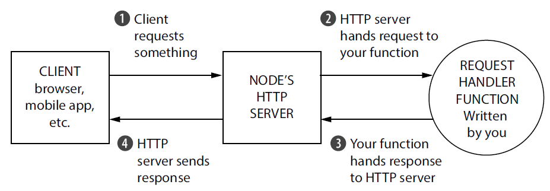
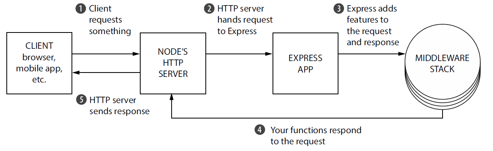
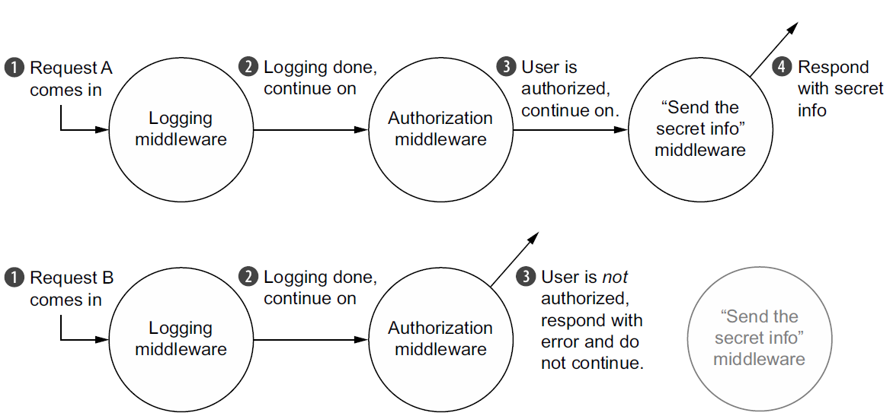
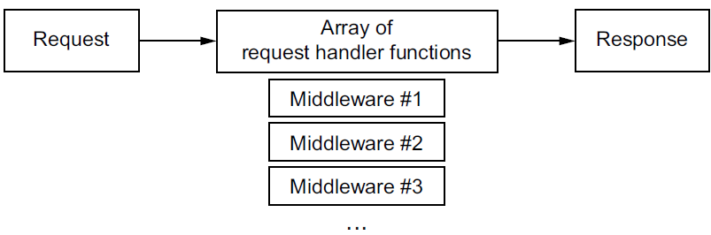
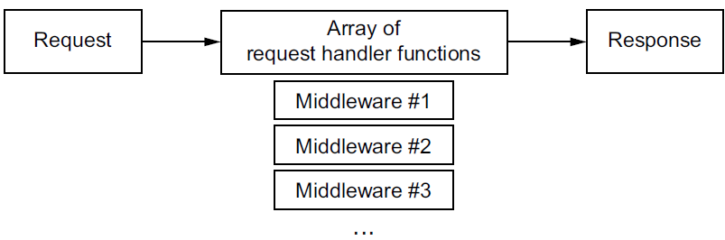

Getting started with Node.js and Express
Node.js
Node.js (often shortened to Node) is a JavaScript platform—a way to run JavaScript.
Node lets run your code the same way you run your python code. Not only on your browser.
Node lets run your code the same way you run your python code. Not only on your browser.
node myscript.js
Node is asynchronous. Meaning, a browser might request something from your server. You begin
responding to this request and another request comes in. Let's say both requests have
to talk to an external database. You can ask the external database about the first
request, and while that external database is thinking, you can begin to respond to the
second request. Your code isn't doing two things at once, but when someone else is
working on something, you're not held up waiting.

Installing Node
The official downloads page at https://nodejs.org/en/download has a number of
links for pretty much every platform—Windows, Mac, and Linux.
Download an LTS version rather than the Current version, because it is more stable.
Download an LTS version rather than the Current version, because it is more stable.
Running your first Node script
However you chose to install Node, it's time to run something. Let's build the classic
Hello World. Create a file called helloworld.js and put the following inside.
console.log("Salem, ESST!");
To run this, type node helloworld.js in the terminal.
Using modules
Most programming languages have a way of
including the code in file A from inside file
B so that you can split your code into multiple files. C and C++ have #include;
Python has import; Ruby and PHP have require. Some languages like C# do this
kind of cross-file communication implicitly at compile time.
For most of its life, the JavaScript language didn't have an official way of doing this. To solve this problem, people built things that concatenated JavaScript files into one file or built dependency loaders like RequireJS. A lot of web developers simply fill their webpages with <script> tags.
Node wanted to solve this problem elegantly, and its developers implemented a standard module system called CommonJS. At its core, CommonJS lets you include code from one file in another. There are three major components to this module system: requiring built-in modules, requiring third-party modules, and making your own modules.
For most of its life, the JavaScript language didn't have an official way of doing this. To solve this problem, people built things that concatenated JavaScript files into one file or built dependency loaders like RequireJS. A lot of web developers simply fill their webpages with <script> tags.
Node wanted to solve this problem elegantly, and its developers implemented a standard module system called CommonJS. At its core, CommonJS lets you include code from one file in another. There are three major components to this module system: requiring built-in modules, requiring third-party modules, and making your own modules.
Requiring built-in modules
I Node to get a built-in module we use require which is similar to keywords like import
or include in other languages. require takes
the name of a
package as a string argument and returns a package. There's nothing special about
the object that's returned—it's often an object, but it could be a function or a string
or a number. The next listing shows how you might use the url module.
var url = require("url");
var parsedURL = url.parse("http://www.ESST.com/profile?name=Omar");
console.log(parsedURL.protocol); // "http:"
console.log(parsedURL.host); // "www.ESST.com"
console.log(parsedURL.query); // "name=Omar"
Requiring third-party modules with package.json and npm
Every Node project sits in a folder, and at the root of every Node project there's a file called
package.json.
It is a pretty simple JSON file that defines project metadata like the name of the project, its version, and its authors. It also defines the project's dependencies.
To create a package.json file automatically. Navigate to your root folder and type the following command:
It is a pretty simple JSON file that defines project metadata like the name of the project, its version, and its authors. It also defines the project's dependencies.
To create a package.json file automatically. Navigate to your root folder and type the following command:
npm init -y
It will ask you a bunch of questions
about your project—project name, author, version—and when it's finished, it
will save a new package.json.
This file contains some description about your project (e.g. its name, version...etc.)
This file contains some description about your project (e.g. its name, version...etc.)
{
"name": "express_test",
"version": "1.0.0",
"description": "",
"main": "helloworld.js",
"scripts": {
"test": "echo \"Error: no test specified\" && exit 1"
},
"keywords": [],
"author": "",
"license": "ISC"
}
Now, if we install a new module a directory called node_modules will be created and all the
installed modules will be inside it.
In addition, this module will be added to the package.json file. Let's try to install mongoose using the following command then check our package.json file.
In addition, this module will be added to the package.json file. Let's try to install mongoose using the following command then check our package.json file.
npm install mongoose //Or: npm i mongoose
The reason
you want dependencies listed in your package.json is so that someone else can install
the dependencies later if you give them the project—they need only to run npm
install with no arguments. Node projects typically have dependencies listed in their
package.json but they don't come with the actual dependency files (they don't include
the node_modules folder).
You can also manually edit package.json and then run npm install. You can also install specific versions of dependencies or install them from places other than the official npm registry; see more at the npm install documentation (https://docs.npmjs.com/cli/install). Now, we can use mongoose as follows:
You can also manually edit package.json and then run npm install. You can also install specific versions of dependencies or install them from places other than the official npm registry; see more at the npm install documentation (https://docs.npmjs.com/cli/install). Now, we can use mongoose as follows:
var mong = require("mongoose");
Defining your own modules
Let's say you want a function that returns a random integer
between 0 and 100.
But in Node you need to choose a variable to export, so that when other files require this one, they know what to grab. In this case, you'll be exporting randomInteger.
Try saving this into a file called random-integer.js
But in Node you need to choose a variable to export, so that when other files require this one, they know what to grab. In this case, you'll be exporting randomInteger.
Try saving this into a file called random-integer.js
var MAX = 100;
function randomInteger() {
return Math.floor(Math.random() * MAX);
}
module.exports = randomInteger;
module.exports can be anything you want. Anything to which
you can assign a variable can be assigned to module.exports. It's a function
in this example, but it's often an object. It could even be a string or a number
or an array if you'd like.
Let's write the following code in another js file and execute it.
Let's write the following code in another js file and execute it.
var randomInt = require("./random-integer");
console.log(randomInt());
console.log(randomInt());
console.log(randomInt());
You can now require it just like any other module, but you have to specify the path
using the dot syntax.
Building a web server with Node: the http module
The http module. It's the module that makes it possible to develop web servers with Node,
and
it's what Express is built on.
Node's http module has various features but we'll use its HTTP server component: a function called http.createServer. This function takes a callback that's called every time a request comes into your server, and it returns a server object. Let's create a new file called myserver.js and write the following code inside it.
Node's http module has various features but we'll use its HTTP server component: a function called http.createServer. This function takes a callback that's called every time a request comes into your server, and it returns a server object. Let's create a new file called myserver.js and write the following code inside it.
var http = require("http");
function requestHandler(request, response) {
console.log("In comes a request to: " + request.url);
response.end("Salem, ESST!");
}
var server = http.createServer(requestHandler);
server.listen(3000);
These request handler
functions take two arguments: an object that represents the request (often shortened
to req) and an object that represents the response (often shortened to res).
The request object has things like the URL that the browser requested, or the type of browser visiting your page (called the user-agent).
You call methods on the response object and Node will package the bytes and send them across the internet.
To run the server, type node myserver.js (or just node myserver). Now, if you visit http://localhost:3000 in your browser, you'll see Salem, ESST!
You'll also notice that something appears in your console every time you visit a page. Try visiting a few other URLs: http://localhost:3000/ or http://localhost:3000/Salem/
The request object has things like the URL that the browser requested, or the type of browser visiting your page (called the user-agent).
You call methods on the response object and Node will package the bytes and send them across the internet.
To run the server, type node myserver.js (or just node myserver). Now, if you visit http://localhost:3000 in your browser, you'll see Salem, ESST!
You'll also notice that something appears in your console every time you visit a page. Try visiting a few other URLs: http://localhost:3000/ or http://localhost:3000/Salem/
var http = require("http");
function requestHandler(request, response) {
console.log("In comes a request to: " + request.url);
if (request.url === "/") {
response.end("Welcome to the homepage!");
} else if (request.url === "/about") {
response.end("Welcome to the about page!");
} else {
response.end("Error! File not found.");
}
}
var server = http.createServer(requestHandler);
server.listen(3000);
Express
Express is a framework that acts as a light layer atop the Node.js web server,
making it more pleasant to develop Node.js web applications.
If you were building your application on top of Node.js without Express, a client hitting your server might look like the following figure:

If you were building your application on top of Node.js without Express, a client hitting your server might look like the following figure:
The JavaScript function that processes browser requests in your application is called a
request handler. There's nothing too special about this; it's a JavaScript function that
takes the request, figures out what to do, and responds. Node.js's HTTP server handles
the connection between the client and your JavaScript function so that you don't have
to handle tricky network protocols.
In code, it's a function that takes two arguments: an object that represents the request and an object that represents the response.
The problem is that the Node.js APIs can get complex when building these function.
Express adds two big features to the Node.js HTTP server:

In code, it's a function that takes two arguments: an object that represents the request and an object that represents the response.
The problem is that the Node.js APIs can get complex when building these function.
Express adds two big features to the Node.js HTTP server:
- It adds a number of helpful conveniences to Node.js's HTTP server, abstracting away a lot of its complexity.
- It lets you refactor one monolithic request handler function into many smaller request handlers that handle only specific bits and pieces. This is more maintainable and more modular.
Rather than one large request handler function, Express has you writing
many smaller functions (many of which can be third-party functions and not
written by you).
Lest's install express:
Lest's install express:
npm i express
Let's create a new file called app.js and write the following code:
var express = require("express");
var http = require("http");
var app = express();
app.use(function (request, response) {
console.log("In comes a request to: " + request.url);
response.end("Salem, ESST!");
});
http.createServer(app).listen(3000);
First, we require Express and Node's http module.
Then you make a variable called app by calling express(), which returns a request handler function.
Then you make a variable called app by calling express(), which returns a request handler function.
Middleware
Middleware is poorly named, but it's a term that's not Express-specific and has been
around for a while. The idea is pretty simple: rather than one monolithic request
handler
function, you call several request handler functions that each deal with a small
chunk of the work. These smaller request handler functions are called middleware
functions,
or middleware.

One of the biggest features of middleware is that it's relatively standardized, which
means that lots of people have developed middleware for Express (including folks on
the Express team). That means that if you can dream up the middleware, someone
has probably already made it. There's middleware to compile static assets like LESS
and SCSS; there's middleware for security and user authentication; there's middleware
to parse cookies and sessions.
With middleware, rather than having your request pass through one function like vanilla Node, it passes through an array of functions you write called a middleware stack.  When you start a server, you start at the topmost middleware and work your way to the bottom.
With middleware, rather than having your request pass through one function like vanilla Node, it passes through an array of functions you write called a middleware stack.  When you start a server, you start at the topmost middleware and work your way to the bottom.
var express = require("express");
var http = require("http");
var app = express();
app.use(function (request, response, next) {
console.log("In comes a " + request.method + " to " + request.url);
next(); // next() will defer to the next middleware in the chain
});
app.use(function (request, response, next) {
var minute = new Date().getMinutes();
if (minute % 2 === 0) {
next();
} else {
response.statusCode = 403;
response.end("Not authorized.");
}
});
app.use(function (request, response) {
response.end('Secret info: the password is "ESST"!');
});
http.createServer(app).listen(3000);
Routing
Like middleware, it breaks the one monolithic
request handler function into smaller pieces. Unlike middleware, these request
handlers are executed conditionally, depending on what URL and HTTP method a client
sends.
Routing allows you to partition your application's behavior by route.
The behavior of these routes is, like middleware, defined in request handler functions. When the user visits the homepage, it will call a request handler function, written by you.
Routing allows you to partition your application's behavior by route.
The behavior of these routes is, like middleware, defined in request handler functions. When the user visits the homepage, it will call a request handler function, written by you.
var express = require("express");
var path = require("path");
var http = require("http");
var app = express();
var publicPath = path.resolve(__dirname, "public");
app.use(express.static(publicPath));
app.get("/", function (request, response) {
response.end("Welcome to my homepage!");
});
app.get("/about", function (request, response) {
response.end("Welcome to the about page!");
});
app.get("/weather", function (request, response) {
response.end("The current weather is NICE.");
});
app.use(function (request, response) {
response.statusCode = 404;
response.end("404!");
});
http.createServer(app).listen(3000);
After the basic requires, you add your static file middleware.
This will serve any files in a folder called public.
The three calls to app.get are Express's magical routing system. They could also be app.post, which respond to POST requests, or PUT, or any of the HTTP verbs.
The first argument is a path, like /about or /weather or simply /, the site's root. The second argument is a request handler function similar to what you saw earlier in the middleware section.
The three calls to app.get are Express's magical routing system. They could also be app.post, which respond to POST requests, or PUT, or any of the HTTP verbs.
The first argument is a path, like /about or /weather or simply /, the site's root. The second argument is a request handler function similar to what you saw earlier in the middleware section.
Views
A number of different view engines are available. There's EJS (which stands for
Embedded JavaScript, a templating language
that compiles to HTML.), Handlebars, Pug, and more.
npm i ejs
The next listing shows what it looks like to set up views.
var express = require("express");
var path = require("path");
var http = require("http");
var app = express();
app.set("views", path.resolve(__dirname, "views")); // Tells Express that your views will be in a folder called views
app.set("view engine", "ejs"); // Tells Express that you're going to use the EJS templating engine
app.get("/", function (request, response) {
response.render("index", {
message: "Hey everyone! This is my webpage.",
});
});
app.use(function (request, response) {
response.status(404).render("404");
});
var server = http.createServer(app);
server.listen(3000);
Let's start by making a file called index.ejs and put it into a directory
called views.
Write the following code:
Write the following code:
<%- include("header") %>
<body class="container">
<h1>
<%= message %>
</a>
</h1>
</body>
<%- include("footer") %>
Variable interpolation <%= message % > will interpolate a
variable called message, which you'll pass when you render the view from Express.
Then we create simple header.ejs, footer.ejs and a 404.ejs
Then we create simple header.ejs, footer.ejs and a 404.ejs
<!DOCTYPE html>
<html>
<head>
<meta charset="utf-8">
<title>Express Guestbook</title>
<link rel="stylesheet" href="//maxcdn.bootstrapcdn.com/bootstrap/3.3.6/css/
bootstrap.min.css">
</head>
<hr>
<hr>
<h1>Footer</h1>
</html>
<%- include("header") %>
<h2>404! Page not found.</h2>
<%- include("footer") %>